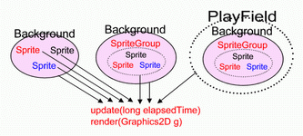

PlayField can be imagine as a game arena where everything, from sprites, background, and other stuff are put, and all activities in this play field are running automatically.
The reason PlayField class is created is same with the reason why SpriteGroup class is created, that is to manage/organize/automate many things easily, where the SpriteGroup is to organize many sprites, the PlayField is exists to organize SpriteGroup, Background, and CollisionManager easily.
The PlayField class is automating :
Background: updating, and rendering background.SpriteGroup: updating, rendering, and placing SpriteGroup into a background.CollisionManager: registering collision group, and checking for collision.
This PlayField class is the third or the last approach of GTGE sprite management.
PlayField Initialization
PlayField initialization is same like SpriteGroup and Sprite class initialization :
class :: PlayField Syntax: public PlayField(); public void update(long elapsedTime); public void render(Graphics2D g); whereas : elapsedTime = time elapsed since last update g = graphics object where the game is rendered
Associating Background with a PlayField
To associate playfield with a background is also same like in SpriteGroup class by using PlayField.setBackground(Background) :
class :: PlayField Syntax: public void setBackground(Background backgr); whereas : backgr = the game arena background
Adding SpriteGroup into a PlayField
To add SpriteGroup into playfield use PlayField.addGroup(SpriteGroup) :
class :: PlayField Syntax: public SpriteGroup addGroup(SpriteGroup group); whereas : group = SpriteGroup to be add to the game arena SpriteGroup = the added SpriteGroup reference For example: adding player group into playfield SpriteGroup PLAYER_GROUP; PlayField playfield; PLAYER_GROUP = new SpriteGroup("Player Group"); playfield.addGroup(PLAYER_GROUP); or in a single step : SpriteGroup PLAYER_GROUP; PlayField playfield; PLAYER_GROUP = playfield.addGroup(new SpriteGroup("Player Group"));
Registering Collision Detection
PlayField also handles the collision detection, simply register any collision types and the collision groups by using PlayField.addCollisionGroup(SpriteGroup, SpriteGroup, CollisionManager) :
class :: PlayField Syntax: public void addCollisionGroup(SpriteGroup group1, SpriteGroup group2, CollisionManager collisionGroup); whereas : group1 = the first group registered for the collision check group2 = the second group registered for the collision check collisionGroup = the collision manager For example: register collision between player shot group and enemy group PlayField playfield; SpriteGroup PLAYER_SHOT_GROUP, ENEMY_GROUP; CollisionManager collisionType; playfield.addCollisionGroup(PLAYER_SHOT_GROUP, ENEMY_GROUP, collisionType);
Full Example
Tutorial11.java [view online]A complete example of how to use PlayField class to manage background, sprite groups, and collision detection :
file :: YourGame.java // JFC import java.awt.*; // GTGE import com.golden.gamedev.*; import com.golden.gamedev.object.*; import com.golden.gamedev.object.background.*; import com.golden.gamedev.object.collision.*; public class YourGame extends Game { PlayField playfield; Background background; SpriteGroup PLAYER_GROUP, ENEMY_GROUP; public void initResources() { background = new ColorBackground(Color.BLUE, 1024, 768); playfield = new PlayField(background); PLAYER_GROUP = playfield.add(new SpriteGroup("Player Group")); ENEMY_GROUP = playfield.add(new SpriteGroup("Enemy Group")); PLAYER_GROUP.add(new Sprite(getImage("player.png"))); PLAYER_GROUP.add(new Sprite(getImage("player.png"))); playfield.addCollisionGroup(PLAYER_GROUP, ENEMY_GROUP, new PlayerEnemyCollision()); } public void update(long elapsedTime) { playfield.update(elapsedTime); } public void render(Graphics2D g) { playfield.render(g); } public static void main(String[] args) { GameLoader game = new GameLoader(); game.setup(new YourGame(), new Dimension(640,480), false); game.start(); } } class PlayerEnemyCollision extends BasicCollisionGroup { public void collided(Sprite s1, Sprite s2) { // make both sprites to vanish! s1.setActive(false); s2.setActive(false); } }Notice : Background and sprite do not need to update and render anymore,
PlayField is automatically update and render the background and all sprite groups inside it, also the collision check does not need to call again, PlayField automatically check for all collisions registered inside it.
The Similarities of All Sprite Management Approach
The similarities of every game objects (Sprite, SpriteGroup, PlayField) are that every game objects are need to do 3 things :
- Attaching to a desired background;
- Updating; and
- Rendering to the screen.
Sprite level, each sprite need to be attached to a background, updated, and rendered one by one.At
SpriteGroup level, the sprites are grouped in a group, and only the group need to be attached to a background, updated, and rendered.An at
PlayField level, all sprite groups are placed in a play field that has a background in it and only this playfield need to be updated and rendered.